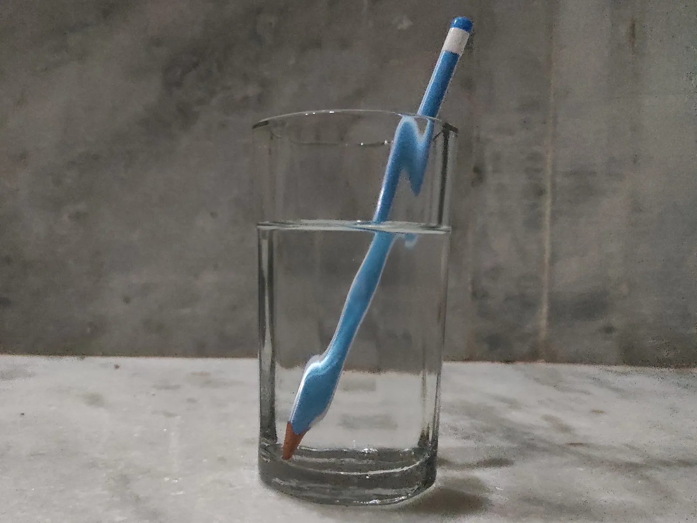

Valon heijastuminen ja taittuminen
Miksi vesilasiin pantu pilli näyttää katkeavan juuri vedenpinnan kohdalla?
Pohjatiedot
- Valo on sähkömagneettista aaltoliikettä, ja tyhjiössä sen nopeus on $c = 3{,}00 \cdot 10^{8}\,\text{m/s}$luku Sähkömagneettinen säteily ja mustan kappaleen spektri
- Aalto heijastuu niin, että heijastuskulma on yhtä suuri kuin tulokulma, kun kulmat mitataan normaalistaluku Aalto kohtaa esteen tai raon
Ydinpolku: etene vaiheiden mukaan. Ydinpolkuun kuuluvat laskujen lisäksi tutkimukset, selitykset ja kuvaajat. Valinnainen-merkityt tehtävät tarjoavat lisäharjoittelua. Valinnaisia tehtäviä 5.
Pohdinta
Laita pilli vesilasiin ja katso lasia vinosti ylhäältä: pilli näyttää katkeavan vedenpinnan kohdalla, ja sen vedessä oleva osa näyttää siirtyneen sivuun. Uima-altaan pohja näyttää olevan lähempänä kuin se on, ja tyyni järvi peilaa rannan puut. Silmälasit, kameran objektiivi ja valokuitu perustuvat kaikki siihen, mitä valolle tapahtuu kahden aineen rajalla.
Mitä valolle tapahtuu, kun se kohtaa vedenpinnan, ja miksi pilli näyttää katkeavan?
Valinnainen Kertaa: heijastuslaki
Ennusta
Tee ennusteet ennen tutkimista 2 kysymystä
Ennuste 1: säde veteen
Ennuste 2: kaksinkertainen tulokulma
Tutki
Laserin säde osuu kahden aineen rajapintaan astelevyn keskellä. Valitse aineet ja tulokulma, ja seuraa heijastunutta ja taittunutta sädettä.
Simulaatio
Käyttöohje
Valitse yläpuolen ja alapuolen aine ja säädä tulokulmaa $\alpha_1$. Laser on yläpuolen aineessa, ja säde osuu rajapintaan astelevyn keskipisteessä. Katkoviiva on rajapinnan normaali, ja kaikki kulmat mitataan siitä: $\alpha_1$ on tulokulma, $\beta$ heijastuskulma ja $\alpha_2$ taitekulma. Astelevyn kehällä on viiva $10^\circ$:n välein ja pidempi viiva $30^\circ$:n välein. Mitä kirkkaampi ja paksumpi säde on, sitä suurempi osa valosta kulkee sitä pitkin. Lukemista näet kulmat, niiden sinit ja heijastuvan osuuden $R$.
Mallin oletukset
Malli käyttää keltaisen valon (aallonpituus $589\,\text{nm}$) taitekertoimia: ilma $1{,}00$, vesi $1{,}33$, akryyli $1{,}49$, lasi $1{,}52$ ja timantti $2{,}42$. Rajapinta on tasainen ja sileä, ja aineet ovat tasalaatuisia ja läpinäkyviä, joten ne eivät absorboi valoa. Heijastuva osuus lasketaan polarisoimattomalle valolle, ja loput valosta jatkaa taittuneena. Jos taittumislaista saataisiin $\sin\alpha_2 > 1$, taittunutta sädettä ei ole, ja kaikki valo heijastuu (luku Kokonaisheijastuminen ja valokuitu). Lukemat ovat mallin laskemia arvoja, eivät mittauksia.
Laskennan selitys
Heijastuskulma on heijastuslain mukaan $\beta = \alpha_1$. Taitekulma saadaan taittumislaista $n_1 \sin\alpha_1 = n_2 \sin\alpha_2$:
$$\sin\alpha_2 = \frac{n_1 \sin\alpha_1}{n_2}$$
Heijastuva osuus $R$ lasketaan Fresnelin yhtälöistä, jotka eivät kuulu lukion oppimäärään; esimerkiksi ilmasta veteen kohtisuoraan tulevasta valosta heijastuu noin $2\,\%$. Taittunut säde kuljettaa osuuden $100\,\% - R$.
Koe 1: ilmasta veteen eri tulokulmilla
Testaa ennusteet 1 ja 2. Yläpuolella on ilma ja alapuolella vesi; muuta vain tulokulmaa. Kirjaa ainakin tulokulmat $0^\circ$, $30^\circ$ ja $60^\circ$, halutessasi myös $20^\circ$, $40^\circ$ ja $80^\circ$. Vertaa heijastuskulmaa tulokulmaan ja taitekulmaa tulokulmaan.
Alkutila: yläpuolen aine: ilma, alapuolen aine: vesi, tulokulma $\alpha _1$ = $0^\circ$. Vakiona: yläpuolen aine, alapuolen aine. Muutetaan: tulokulma $\alpha _1$.
| tulokulma $\alpha _1$ | $\beta$ $(^\circ)$ | $\alpha_2$ $(^\circ)$ | $\sin\alpha_1$ | $\sin\alpha_2$ |
|---|
Koe 2: eri aineet
Yläpuolella on ilma ja tulokulma on $50^\circ$; muuta vain alapuolen ainetta. Kirjaa taitekulma, kun alapuolella on vesi, akryyli, lasi ja timantti, ja vertaa taitekulmia aineiden taitekertoimiin.
Alkutila: yläpuolen aine: ilma, alapuolen aine: vesi, tulokulma $\alpha _1$ = $50^\circ$. Vakiona: yläpuolen aine, tulokulma $\alpha _1$. Muutetaan: alapuolen aine.
| alapuolen aine | $n_2$ | $\alpha_2$ $(^\circ)$ | $\sin\alpha_2$ |
|---|
Johtopäätös: heijastus ja taittuminen
Mikä on heijastuskulman ja tulokulman yhteys? Laske kokeen 1 jokaiselta riviltä (paitsi $0^\circ$) $\sin\alpha_1 : \sin\alpha_2$ ja vertaa sitä kulmien suhteeseen $\alpha_1 : \alpha_2$. Kumpi pysyy samana? Miten kokeen 2 taitekulma riippuu alapuolen aineen taitekertoimesta?
Mallivastaus
Heijastuskulma on joka rivillä sama kuin tulokulma, $\beta = \alpha_1$. Kohtisuoraan tuleva säde ($0^\circ$) jatkaa veteen suoraan. Muuten säde taittuu kohti normaalia: $30^\circ \to 22{,}1^\circ$ ja $60^\circ \to 40{,}6^\circ$. Kulmien suhde muuttuu ($1{,}36$ ja $1{,}48$), mutta sinien suhde on joka rivillä $\sin\alpha_1 : \sin\alpha_2 = 1{,}33$, sama kuin veden taitekerroin. Kokeessa 2 taitekulma pienenee, kun taitekerroin kasvaa: vedessä $35{,}2^\circ$, akryylissä $30{,}9^\circ$, lasissa $30{,}3^\circ$ ja timantissa $18{,}5^\circ$. Joka rivillä $n_2 \sin\alpha_2 = \sin 50^\circ = 0{,}766$. Säännönmukaisuus on taittumislaki $n_1 \sin\alpha_1 = n_2 \sin\alpha_2$. Arvot ovat mallin laskemia.
Arvioi oma vastauksesi
Rastita kohdat, jotka omassa vastauksessasi jo on.
Kertaa asia teoriasta ja harjoittele tehtävillä.
Mittaus: akryylin taitekerroin
Keksitty esimerkkiaineisto
Ryhmä teki koulun laboratoriossa kokeen, jossa laserin säde ohjattiin ilmasta akryylisen puolisylinterin tasaisen pinnan keskipisteeseen astelevyn päällä. Akryylissä valo kulkee keskipisteestä suoraan kohti kaarevaa pintaa, joten se ei taitu kaarevassa pinnassa, ja taitekulman voi lukea astelevyltä. Ryhmä luki kulmat asteen tarkkuudella.
| $\alpha_1$ (°) | $\alpha_2$ (°) |
|---|---|
| $10$ | $7$ |
| $20$ | $13$ |
| $30$ | $20$ |
| $40$ | $26$ |
| $50$ | $31$ |
| $60$ | $36$ |
| $70$ | $39$ |
Ryhmä laski kulmien sinit ja piirsi Vernier Graphical Analysis -ohjelmalla kuvaajan, jossa pystyakselilla on $\sin\alpha_1$ ja vaaka-akselilla $\sin\alpha_2$. Ohjelma sovitti pisteisiin suoran $\sin\alpha_1 = A \sin\alpha_2 + B$ ja ilmoitti kulmakertoimen $A = 1{,}489$, sen epävarmuuden $\Delta A = 0{,}016$ ja vakiotermin $B = -0{,}004$. Todellisissa mittaussarjoissa mittauspisteet eivät yleensä sijaitse täsmälleen samalla suoralla mittausepävarmuuden vuoksi.
Määritä mittauksesta akryylin taitekerroin. Ilman taitekerroin on $1{,}00$.
Vihje 1: ohjaava kysymys
Kirjoita taittumislaki niin, että $\sin\alpha_1$ on yhtälön vasemmalla puolella. Mitä kulmakerroin silloin on?
Vihje 2: mikä yhteys
Taittumislaista $\sin\alpha_1 = \tfrac{n_2}{n_1} \sin\alpha_2$, joten kulmakerroin on $A = n_2 : n_1$.
Vihje 3: välivaihe
Näytä ratkaisu
Annettu
sovitetun suoran kulmakerroin $A = 1{,}489$, $\Delta A = 0{,}016$, vakiotermi $B = -0{,}004$, ilman taitekerroin $n_1 = 1{,}00$
Kysytty
akryylin taitekerroin $n_2$ (yksikötön)
Periaate
Taittumislaista $n_1 \sin\alpha_1 = n_2 \sin\alpha_2$ saadaan $\sin\alpha_1 = \tfrac{n_2}{n_1} \sin\alpha_2$. Kun $\sin\alpha_1$ piirretään $\sin\alpha_2$:n funktiona, pisteet ovat origon kautta kulkevalla suoralla, jonka kulmakerroin on $n_2 : n_1$. Kulmakerroin luetaan sovitetusta suorasta eikä yksittäisistä pisteistä, koska suora ottaa huomioon kaikki mittaukset. Vakiotermi $B = -0{,}004$ on lähes nolla, kuten mallin mukaan pitää.
Kuvaajan lukeminen
Sovitettu suora kulkee likimain origon ja pisteen $(0{,}60$; $0{,}89)$ kautta, joten kulmakerroin on noin $0{,}89 : 0{,}60 \approx 1{,}48$; ohjelman tarkka arvo on $A = 1{,}489$.
Kaava
$A = \dfrac{n_2}{n_1}$, josta $n_2 = A n_1$
Muunnokset
Ei tarvita: sinit ja taitekertoimet ovat yksikköttömiä.
Sijoitus
$n_2 = 1{,}489 \cdot 1{,}00 = 1{,}489$
Vastaus
$n_2 \approx 1{,}49$
Kolme merkitsevää numeroa, koska kulmakertoimen epävarmuus $0{,}016$ on toisen desimaalin suuruinen: $n_2 = 1{,}49 \pm 0{,}02$.
Järkevyys
Tulos on sama kuin akryylin taulukkoarvo $1{,}49$. Yksittäisistä riveistä laskettu sinien suhde vaihtelee, esimerkiksi $\sin 10^\circ : \sin 7^\circ = 1{,}42$ ja $\sin 50^\circ : \sin 31^\circ = 1{,}49$, koska asteen lukemavirhe on pienissä kulmissa suhteellisesti suuri. Siksi kulmakerroin, joka ottaa kaikki pisteet huomioon, on luotettavampi.
Valinnainen Valon nopeus akryylissä
Edellisen mittauksen mukaan akryylin taitekerroin on $1{,}49$. Kuinka suurella nopeudella valo etenee akryylissä? Anna vastaus muodossa $\ldots \cdot 10^{8}\,\text{m/s}$ eli kirjoita vastaukseksi kerroin.
Vihje 1: ohjaava kysymys
Mitä taitekerroin kertoo valon nopeudesta aineessa?
Vihje 2: mikä yhteys
$n = c : v$, joten $v = c : n$.
Vihje 3: välivaihe
$v = 3{,}00 \cdot 10^{8}\,\text{m/s} : 1{,}49$.
Näytä ratkaisu
Annettu
akryylin taitekerroin $n = 1{,}49$, valon nopeus tyhjiössä $c = 3{,}00 \cdot 10^{8}\,\text{m/s}$
Kysytty
valon nopeus akryylissä $v$ muodossa $\ldots \cdot 10^{8}\,\text{m/s}$
Periaate
Taitekerroin kertoo, kuinka monta kertaa hitaammin valo etenee aineessa kuin tyhjiössä, joten nopeus aineessa saadaan taitekertoimen määritelmästä.
Kaava
$n = \dfrac{c}{v}$, josta $v = \dfrac{c}{n}$
Muunnokset
Ei tarvita: taitekerroin on yksikötön, joten $v$ saadaan samassa yksikössä kuin $c$.
Sijoitus
Vastaus
$v \approx 2{,}01 \cdot 10^{8}\,\text{m/s}$
Vastaukseksi $2{,}01$; kolme merkitsevää numeroa kuten taitekertoimessa.
Järkevyys
Nopeus on noin kaksi kolmasosaa tyhjiön nopeudesta, koska $1 : 1{,}5 \approx 0{,}67$, ja
Teoria
Ydinajatus
Valo etenee säteinä
Valo on sähkömagneettista aaltoliikettä (luku Sähkömagneettinen säteily ja mustan kappaleen spektri). Tasalaatuisessa aineessa, kuten ilmassa, vedessä tai lasissa, valo etenee suoraviivaisesti. Valon kulkua kuvataan säteillä: säde on viiva, joka näyttää valon etenemissuunnan. Kun valo kohtaa kahden aineen rajapinnan, osa siitä heijastuu takaisin samaan aineeseen ja osa jatkaa toiseen aineeseen. Rajapinnan läpi menevä valo yleensä muuttaa suuntaansa: se taittuu. Kulmat mitataan aina rajapinnan normaalista eli suorasta, joka on kohtisuorassa rajapintaa vastaan säteen osumiskohdassa. Tulevan säteen ja normaalin välinen kulma on tulokulma $\alpha_1$, heijastuneen säteen kulma heijastuskulma $\beta$ ja taittuneen säteen kulma taitekulma $\alpha_2$.
Heijastuslaki
Valo heijastuu samalla tavalla kuin mekaaniset aallot luvussa Aalto kohtaa esteen tai raon: heijastuskulma on yhtä suuri kuin tulokulma, ja tuleva säde, heijastunut säde ja normaali ovat samassa tasossa. Sileä pinta, kuten peili tai tyyni vedenpinta, heijastaa yhdensuuntaiset säteet yhdensuuntaisina, joten siitä näkyy kuva. Karhealla pinnalla, kuten paperilla, normaali osoittaa joka kohdassa eri suuntaan. Siksi pinta heijastaa valoa kaikkiin suuntiin, ja paperin näkee mistä suunnasta tahansa. Heijastuslaki pätee silloinkin jokaisessa pinnan pienessä kohdassa.
Valo hidastuu aineessa
Tyhjiössä valo etenee nopeudella $c = 3{,}00 \cdot 10^{8}\,\text{m/s}$. Aineessa valo etenee hitaammin. Aineen taitekerroin $n$ kertoo, kuinka monta kertaa hitaammin: vedessä valon nopeus on noin $2{,}26 \cdot 10^{8}\,\text{m/s}$, joten veden taitekerroin on $1{,}33$. Ilman taitekerroin on $1{,}0003$, joten ilmassa valo etenee lähes yhtä nopeasti kuin tyhjiössä. Aine, jonka taitekerroin on suurempi, on optisesti tiheämpi. Kun valo siirtyy aineesta toiseen, sen taajuus ei muutu, koska taajuuden määrää valonlähde. Nopeus kuitenkin muuttuu, joten myös aallonpituus muuttuu yhtälön $v = f \lambda$ mukaan: vedessä aallonpituus on $1{,}33$ kertaa lyhyempi kuin ilmassa.
Miksi valo taittuu
Taittuminen johtuu nopeuden muutoksesta. Kuvassa vinosti rajapintaan tulevan aallon aaltorintamat ovat yhdensuuntaisia viivoja, ja säde on kohtisuorassa niitä vastaan. Rintaman vasen pää saapuu veteen ensin ja hidastuu, kun oikea pää kulkee vielä ilmassa nopeammin. Siksi rintama kääntyy, ja vedessä aalto etenee uuteen suuntaan, lähempänä normaalia. Vedessä rintamat ovat myös tiheämmässä, koska aallonpituus on lyhyempi. Kun valo tulee kohtisuoraan rajapintaan, $\alpha_1 = 0^\circ$, rintaman kaikki kohdat hidastuvat yhtä aikaa, eikä suunta muutu.
Kohti normaalia tai siitä poispäin
Kun valo siirtyy optisesti tiheämpään aineeseen, esimerkiksi ilmasta veteen, se taittuu kohti normaalia: taitekulma on pienempi kuin tulokulma. Kun valo siirtyy optisesti harvempaan aineeseen, esimerkiksi vedestä ilmaan, se taittuu normaalista poispäin. Valon kulku on käännettävissä: jos säde kulkee ilmasta veteen tiettyä reittiä, vedestä ilmaan tuleva säde voi kulkea saman reitin takaisin. Mitä suurempi on taitekertoimien ero, sitä enemmän säde taittuu samalla tulokulmalla. Siksi timantti, jonka taitekerroin on $2{,}42$, taittaa valoa paljon enemmän kuin vesi.
Osittainen heijastuminen
Rajapinnassa valo jakautuu aina heijastuvaan ja läpi menevään osaan. Kun valo tulee kohtisuoraan ilmasta lasiin, lasin kummastakin pinnasta heijastuu noin $4\,\%$ valosta ja vedenpinnasta noin $2\,\%$. Mitä suurempi tulokulma on eli mitä enemmän valo tulee pintaa hipoen, sitä suurempi osa heijastuu. Siksi järven pinta peilaa iltaisin rannan puut, vaikka pohja näkyy, kun katsoo suoraan alas. Ikkunasta näkee illalla oman huoneensa heijasteen, koska ulkoa tulee vähän valoa ja huoneesta lasiin osuva valo heijastuu osittain takaisin. Heijastunut ja läpi mennyt osa ovat yhteensä yhtä paljon kuin tuleva valo, kun aine ei absorboi valoa.
Näennäinen syvyys
Kun katsot uima-altaan pohjassa olevaa kolikkoa, kolikosta lähtevät säteet taittuvat vedenpinnassa normaalista poispäin. Silmä ja aivot tulkitsevat, että valo on tullut suoraan viivaa pitkin. Kun silmään tulevat säteet jatketaan taaksepäin veteen, ne näyttävät lähtevän kohdasta, joka on ylempänä kuin kolikko. Siksi allas näyttää matalammalta kuin se on, ja kolikko näyttää olevan lähempänä pintaa. Samasta syystä pillin vedessä oleva osa näyttää nousseen ylemmäs, kun lasia katsotaan vinosti ylhäältä vedenpinnan läpi, ja pilli näyttää katkeavan vedenpinnan kohdalla. Koska katsot vinosti, ylemmäs nostettu osa näkyy samalla sivuun siirtyneenä.

Heijastuslaki ja taittumislaki
Heijastuslaki: heijastuskulma on yhtä suuri kuin tulokulma,
$$\beta = \alpha_1$$
missä $\beta$ on heijastuskulma ja $\alpha_1$ tulokulma, molemmat mitattuina rajapinnan normaalista.
Aineen taitekerroin on valon nopeuden suhde tyhjiössä ja aineessa:
$$n = \frac{c}{v}$$
missä $c = 3{,}00 \cdot 10^{8}\,\text{m/s}$ on valon nopeus tyhjiössä ja $v$ valon nopeus aineessa (m/s). Taitekerroin on yksikötön, ja näkyvälle valolle läpinäkyvissä aineissa se on aina suurempi kuin $1$.
Taittumislaki eli Snellin laki
Kun valo siirtyy aineesta, jonka taitekerroin on $n_1$, aineeseen, jonka taitekerroin on $n_2$, tulokulma ja taitekulma toteuttavat yhtälön
$$n_1 \sin \alpha_1 = n_2 \sin \alpha_2$$
missä $\alpha_1$ on tulokulma ja $\alpha_2$ taitekulma normaalista mitattuina. Laki seuraa aaltorintamien kääntymisestä: kulmien sinien suhde on sama kuin nopeuksien suhde, $\sin\alpha_1 : \sin\alpha_2 = v_1 : v_2 = n_2 : n_1$. Laki koskee kulmien sinejä, ei kulmia: kun tulokulma kaksinkertaistuu, taitekulma ei kaksinkertaistu. Kuvaajassa taitekulma kasvaa tulokulman mukana, mutta yhä hitaammin.
Taitekertoimia
Taitekerroin riippuu hieman valon aallonpituudesta (luku Dispersio: prisma ja sateenkaari). Taulukon arvot ovat keltaiselle valolle, jonka aallonpituus on $589\,\text{nm}$, ja huoneenlämpöiselle aineelle. Lasin ja akryylin taitekertoimet vaihtelevat laadun mukaan.
| aine | $n$ |
|---|---|
| ilma | $1{,}0003$ |
| vesi | $1{,}33$ |
| etanoli | $1{,}36$ |
| akryyli | $1{,}49$ |
| ikkunalasi | $1{,}52$ |
| timantti | $2{,}42$ |
Lähde: CRC Handbook of Chemistry and Physics, 97. painos, 2016; lasin ja akryylin arvot ovat tyypillisiä arvoja. Laskuissa ilman taitekertoimena käytetään arvoa $1{,}00$.
Yleinen virhekäsitys
Moni mittaa tulokulman rajapinnasta eikä normaalista. Jos säde ja vedenpinta ovat $30^\circ$:n kulmassa, tulokulma on $90^\circ - 30^\circ = 60^\circ$. Toinen virhe on ajatella, että taitekulma on verrannollinen tulokulmaan. Taittumislaki koskee kulmien sinejä: ilmasta veteen tulokulmalla $30^\circ$ taitekulma on $22{,}1^\circ$, mutta tulokulmalla $60^\circ$ se on $40{,}6^\circ$ eikä $44{,}2^\circ$. Kolmas virhe on uskoa, että valo taittuu aina kohti normaalia. Suunta riippuu siitä, kumpi aine on optisesti tiheämpi: vedestä ilmaan tuleva säde taittuu normaalista poispäin. Neljäs virhe on luulla, että valo taittuu, koska se ”törmää” pintaan. Valo taittuu, koska sen nopeus muuttuu.
Tiivistelmä
- Rajapinnassa osa valosta heijastuu ja osa taittuu. Kulmat mitataan rajapinnan normaalista.
- Heijastuslaki: $\beta = \alpha_1$, ja tuleva säde, heijastunut säde ja normaali ovat samassa tasossa.
- Taitekerroin $n = c : v$ kertoo, kuinka monta kertaa hitaammin valo etenee aineessa kuin tyhjiössä.
- Taittumislaki: $n_1 \sin\alpha_1 = n_2 \sin\alpha_2$. Optisesti tiheämpään aineeseen säde taittuu kohti normaalia, harvempaan normaalista poispäin.
- Vedessä olevat esineet näyttävät olevan lähempänä pintaa kuin ne ovat, koska niistä tulevat säteet taittuvat vedenpinnassa.
Valinnainen Palaa ennusteisiisi
Vertaa ennusteitasi teoriaan ja kokeiden mallin arvoihin. Palaa sitten alun kysymykseen: miksi vesilasissa oleva pilli näyttää katkeavan vedenpinnan kohdalla?
Muuttaisitko ennustettasi?
Esimerkit
Katso ensin mallilasku. Harjoittele sitten samaa itse: vihjeet auttavat, jos jäät jumiin.
Esimerkki
Tehtävä
Laserin säde tulee ilmasta altaan vedenpintaan tulokulmassa $55{,}0^\circ$. Kuinka suuri on taitekulma vedessä, ja kuinka suurella nopeudella valo etenee vedessä? Ilman taitekerroin on $1{,}00$ ja veden $1{,}33$.
Vaihe 1/7
Tunnetut ja kysytty. Tulokulma $\alpha_1 = 55{,}0^\circ$, ilman taitekerroin $n_1 = 1{,}00$, veden taitekerroin $n_2 = 1{,}33$ ja valon nopeus tyhjiössä $c = 3{,}00 \cdot 10^{8}\,\text{m/s}$. Kysytään taitekulmaa $\alpha_2$ ja valon nopeutta vedessä $v$.
Vaihe 2/7
Periaate. Valo siirtyy ilmasta veteen, joten se taittuu rajapinnassa taittumislain mukaan. Vesi on optisesti tiheämpää, joten säde taittuu kohti normaalia. Valon nopeus vedessä saadaan taitekertoimen määritelmästä $n = c : v$.
Vaihe 3/7
Kaava ratkaistuna. $$\begin{aligned} n_1 \sin\alpha_1 &= n_2 \sin\alpha_2 \\ \sin\alpha_2 &= \frac{n_1 \sin\alpha_1}{n_2} \\[6pt] n_2 &= \frac{c}{v} \;\Rightarrow\; v = \frac{c}{n_2} \end{aligned}$$
Vaihe 4/7
Yksikkömuunnokset. Ei tarvita: taitekertoimet ovat yksikköttömiä, ja kulma on asteina. Nopeus saadaan samassa yksikössä kuin $c$ eli metreinä sekunnissa.
Vaihe 5/7
Sijoitus. $$\begin{aligned} &\sin\alpha_2 = \frac{n_1 \sin\alpha_1}{n_2} \\ &= \frac{1{,}00 \cdot \sin 55{,}0^\circ}{1{,}33} \\ &= 0{,}6159 \\ &\alpha_2 = 38{,}02^\circ \\[6pt] &v = \frac{c}{n_2} \\ &= \frac{3{,}00 \cdot 10^{8}\,\text{m/s}}{1{,}33} \\ &= 2{,}256 \cdot 10^{8}\,\text{m/s} \end{aligned}$$
Vaihe 6/7
Tulos. Taitekulma on $\alpha_2 \approx 38{,}0^\circ$, ja valo etenee vedessä nopeudella $v \approx 2{,}26 \cdot 10^{8}\,\text{m/s}$. Tulokset ilmoitetaan kolmella merkitsevällä numerolla kuten tulokulma $55{,}0^\circ$ ja taitekertoimet.
Vaihe 7/7
Järkevyys. Säde taittuu kohti normaalia, koska $38{,}0^\circ < 55{,}0^\circ$, kuten optisesti tiheämpään aineeseen siirtyessä pitääkin. Nopeus on pienempi kuin $c$, ja sinien suhde on sama kuin nopeuksien suhde: $\sin 55{,}0^\circ : \sin 38{,}0^\circ \approx 1{,}33$ ja $3{,}00 : 2{,}26 \approx 1{,}33$.
Valinnainen Etsi virhe
Sovella uuteen tilanteeseen: akvaarion seinä
Akvaarion pohjalla olevasta lampusta lähtevä säde osuu akvaarion lasiseinään tulokulmassa $30{,}0^\circ$, kulkee tasapaksun lasin läpi ja jatkaa huoneilmaan. Veden taitekerroin on $1{,}33$, lasin $1{,}52$ ja ilman $1{,}00$.
Kuinka suuren kulman säde muodostaa ilmassa lasin pinnan normaalin kanssa?
Vihje 1: ohjaava kysymys
Säde taittuu kahdesti: vedestä lasiin ja lasista ilmaan. Lasin pinnat ovat yhdensuuntaiset, joten molemmilla pinnoilla on sama normaali. Mikä yhteys on lasissa kulkevan säteen kahdella kulmalla?
Vihje 2: mikä yhteys
Lasissa säde kulkee suoraan, joten sen kulma normaaliin on sama kummallakin pinnalla. Silloin
Vihje 3: välivaihe
Lasin taitekerroin supistuu pois: $\sin\alpha_3 = 1{,}33 \cdot \sin 30{,}0^\circ : 1{,}00$.
Näytä ratkaisu
Annettu
tulokulma vedessä $\alpha_1 = 30{,}0^\circ$, veden taitekerroin $n_1 = 1{,}33$, lasin $n_2 = 1{,}52$, ilman $n_3 = 1{,}00$, lasi tasapaksu
Kysytty
säteen ja normaalin välinen kulma ilmassa $\alpha_3$ asteina
Periaate
Säde taittuu kahdesti taittumislain mukaan, vedestä lasiin ja lasista ilmaan. Lasin pinnat ovat yhdensuuntaiset, joten niillä on sama normaali, ja lasissa kulkeva säde muodostaa saman kulman $\alpha_2$ kummankin pinnan normaalin kanssa. Siksi $n \sin\alpha$ on sama kaikissa kolmessa aineessa, ja lasin taitekerroin supistuu pois.
Kaava
$n_1 \sin\alpha_1 = n_2 \sin\alpha_2$ ja $n_2 \sin\alpha_2 = n_3 \sin\alpha_3$, joten
Muunnokset
Ei tarvita: taitekertoimet ovat yksikköttömiä, ja kulmat ovat asteina.
Sijoitus
joten $\alpha_3 = 41{,}68^\circ$
Vastaus
$\alpha_3 \approx 41{,}7^\circ$
Kolme merkitsevää numeroa kuten tulokulmassa $30{,}0^\circ$ ja taitekertoimissa.
Järkevyys
Välivaiheena lasissa
$\alpha_2 = 25{,}9^\circ$, ja lasista ilmaan $1{,}52 \cdot 0{,}4375 = 0{,}665$, sama tulos. Kulma ilmassa on suurempi kuin vedessä, koska ilma on optisesti harvempaa kuin vesi.
Kertaa luvun käsitteet
Jos valitset Kertaa myöhemmin, kortti siirtyy kertauspakkaasi.
- Taitekerroin
- Valon nopeuden suhde tyhjiössä ja aineessa.$$n = \dfrac{c}{v}$$
- Snellin laki
- Taittumislaki: valon tulo- ja taitekulma riippuvat aineiden taitekertoimista.$$n_1\sin\alpha_1 = n_2\sin\alpha_2$$
Tarkista osaamisesi
Testaa lopuksi, osaatko luvun tavoitteet. Jos vastaus menee väärin, saat ehdotuksen, mitä kerrata.
Exit ticket
Vastaa ensin itse ja avaa vastaus vasta sitten.
- Valonsäde osuu tasopeiliin tulokulmassa $25^\circ$. Kuinka suuri on heijastuskulma, ja kuinka suuri kulma on tulevan ja heijastuneen säteen välillä?
Vastaus
Heijastuskulma on $\beta = \alpha_1 = 25^\circ$, ja säteiden välinen kulma on $25^\circ + 25^\circ = 50^\circ$, koska normaali on säteiden puolivälissä.
- Valo etenee aineessa nopeudella $2{,}25 \cdot 10^{8}\,\text{m/s}$. Kuinka suuri on aineen taitekerroin, ja mikä aine voisi olla kyseessä?
Vastaus
$n$$= c : v$$= 3{,}00 \cdot 10^{8}\,\text{m/s} : 2{,}25 \cdot 10^{8}\,\text{m/s}$$= 1{,}33$joten aine voi olla vettä.
1. Käsite: miksi valo taittuu
2. Laske: öljyn taitekerroin
Laserin säde tulee ilmasta ruokaöljyyn. Tulokulma on $50{,}0^\circ$ ja taitekulma $31{,}4^\circ$. Ilman taitekerroin on $1{,}00$. Kuinka suuri on öljyn taitekerroin?
Vihje 1: ohjaava kysymys
Mikä laki yhdistää tulokulman, taitekulman ja taitekertoimet?
Vihje 2: mikä yhteys
$n_1 \sin\alpha_1 = n_2 \sin\alpha_2$, josta $n_2 = n_1 \sin\alpha_1 : \sin\alpha_2$.
Vihje 3: välivaihe
$n_2 = 1{,}00 \cdot \sin 50{,}0^\circ : \sin 31{,}4^\circ$.
Näytä ratkaisu
Annettu
tulokulma $\alpha_1 = 50{,}0^\circ$, taitekulma $\alpha_2 = 31{,}4^\circ$, ilman taitekerroin $n_1 = 1{,}00$
Kysytty
öljyn taitekerroin $n_2$ (yksikötön)
Periaate
Säde siirtyy ilmasta öljyyn ja taittuu taittumislain mukaan. Kun tulokulma, taitekulma ja ilman taitekerroin tunnetaan, öljyn taitekerroin saadaan ratkaistua laista.
Kaava
$n_1 \sin\alpha_1 = n_2 \sin\alpha_2$, josta
Muunnokset
Ei tarvita: kulmat ovat asteina, ja taitekertoimet ovat yksikköttömiä.
Sijoitus
Vastaus
$n_2 \approx 1{,}47$
Kolme merkitsevää numeroa kuten kulmissa.
Järkevyys
Taitekerroin on suurempi kuin $1$, koska säde taittui kohti normaalia. Arvo on veden $1{,}33$ ja lasin $1{,}52$ välissä, ja ruokaöljyjen taitekertoimet ovat noin $1{,}47$.
Ehdotus: yksi vastaus ei vielä kerro koko osaamistasi, mutta kertaa asia teoriasta ja tee ydintehtävät.
Valinnainen 3. Selitä: katkeava pilli
Selitä taittumisen avulla, miksi vesilasissa oleva pilli näyttää katkeavan vedenpinnan kohdalla, kun lasia katsotaan sivulta vinosti ylhäältä.
Mallivastaus
Pillin vedessä olevasta osasta lähtevät säteet kulkevat vedestä ilmaan. Ilma on optisesti harvempaa, joten säteet taittuvat vedenpinnassa normaalista poispäin. Silmä ja aivot olettavat, että valo on kulkenut suoraan, joten ne jatkavat silmään tulevia säteitä taaksepäin suoria viivoja pitkin. Jatkeet kohtaavat kohdassa, joka on ylempänä kuin pillin todellinen kohta. Siksi pillin vedessä oleva osa näyttää nousseen ylemmäs ja siirtyneen, kun taas vedenpinnan yläpuolella oleva osa näkyy oikealla paikallaan. Pilli näyttää katkeavan juuri vedenpinnan kohdalla, koska siinä valo vaihtaa ainetta.
Arvioi oma vastauksesi
Rastita kohdat, jotka omassa vastauksessasi jo on.
Kertaa asia teoriasta ja harjoittele tehtävillä.
Tehtävät
Taso 1 · perusharjoitus 8 tehtävää
Yksi kaava tai yksi päättelyaskel. Ydintehtävät ensin, loput lisäharjoitusta.
- Tehtävä 10-1
Valo etenee etanolissa nopeudella $2{,}20 \cdot 10^{8}\,\text{m/s}$. Kuinka suuri on etanolin taitekerroin? Valon nopeus tyhjiössä on $3{,}00 \cdot 10^{8}\,\text{m/s}$.
Vastaus
$n \approx 1{,}36$
Näytä ratkaisu
Annettu
valon nopeus etanolissa $v = 2{,}20 \cdot 10^{8}\,\text{m/s}$, valon nopeus tyhjiössä $c = 3{,}00 \cdot 10^{8}\,\text{m/s}$
Kysytty
etanolin taitekerroin $n$ (yksikötön)
Periaate
Aineen taitekerroin kertoo, kuinka monta kertaa hitaammin valo etenee aineessa kuin tyhjiössä. Kun valon nopeus aineessa tunnetaan, taitekerroin saadaan suoraan määritelmästään.
Kaava
$n = \dfrac{c}{v}$
Muunnokset
Ei tarvita: kumpikin nopeus on yksikössä $\text{m/s}$, joten yksiköt supistuvat.
Sijoitus
$n$$= \dfrac{3{,}00 \cdot 10^{8}\,\text{m/s}}{2{,}20 \cdot 10^{8}\,\text{m/s}}$$= 1{,}3636$Vastaus
$n \approx 1{,}36$
Kolme merkitsevää numeroa kuten nopeuksissa.
Järkevyys
Taitekerroin on suurempi kuin $1$, kuten aineessa pitää, ja hieman suurempi kuin veden $1{,}33$. Taulukon mukaan etanolin taitekerroin on $1{,}36$.
- Tehtävä 10-2
Timantin taitekerroin on $2{,}42$. Kuinka suurella nopeudella valo etenee timantissa? Anna vastaus muodossa $\ldots \cdot 10^{8}\,\text{m/s}$ eli kirjoita vastaukseksi kerroin.
Vastaus
$v \approx 1{,}24 \cdot 10^{8}\,\text{m/s}$
Näytä ratkaisu
Annettu
timantin taitekerroin $n = 2{,}42$, valon nopeus tyhjiössä $c = 3{,}00 \cdot 10^{8}\,\text{m/s}$
Kysytty
valon nopeus timantissa $v$ muodossa $\ldots \cdot 10^{8}\,\text{m/s}$
Periaate
Taitekerroin on valon nopeuden suhde tyhjiössä ja aineessa, $n = c : v$. Kun taitekerroin tunnetaan, nopeus aineessa saadaan ratkaisemalla yhtälöstä $v$.
Kaava
$n = \dfrac{c}{v}$, josta $v = \dfrac{c}{n}$
Muunnokset
Ei tarvita: taitekerroin on yksikötön, joten $v$ saadaan samassa yksikössä kuin $c$.
Sijoitus
$v$$= \dfrac{3{,}00 \cdot 10^{8}\,\text{m/s}}{2{,}42}$$= 1{,}2397 \cdot 10^{8}\,\text{m/s}$Vastaus
$v \approx 1{,}24 \cdot 10^{8}\,\text{m/s}$
Vastaukseksi $1{,}24$; kolme merkitsevää numeroa kuten taitekertoimessa.
Järkevyys
Timantissa valo etenee alle puolella tyhjiön nopeudesta, koska taitekerroin on yli $2$, joten $3{,}00 : 2 = 1{,}5$, ja tulos on vähän tätä pienempi.
- Tehtävä 10-3
Valonsäde osuu tasopeiliin. Tulevan ja heijastuneen säteen välinen kulma on $76^\circ$. Kuinka suuri on tulokulma?
Vastaus
$\alpha_1 = 38^\circ$
Näytä ratkaisu
Annettu
tulevan ja heijastuneen säteen välinen kulma $76^\circ$, tasopeili
Kysytty
tulokulma $\alpha_1$ asteina
Periaate
Heijastuslain mukaan heijastuskulma on yhtä suuri kuin tulokulma, $\beta = \alpha_1$, kun molemmat mitataan normaalista. Normaali on tulevan ja heijastuneen säteen puolivälissä, joten säteiden välinen kulma on $\alpha_1 + \beta = 2\alpha_1$.
Kaava
$\alpha_1 + \beta = 76^\circ$ ja $\beta = \alpha_1$, joten $2\alpha_1 = 76^\circ$ ja $\alpha_1 = \dfrac{76^\circ}{2}$
Muunnokset
Ei tarvita: kulmat ovat asteina.
Sijoitus
$\alpha_1$$= \dfrac{76^\circ}{2}$$= 38^\circ$Vastaus
$\alpha_1 = 38^\circ$
Kaksi merkitsevää numeroa kuten kulmassa $76^\circ$.
Järkevyys
Heijastuskulma on myös $38^\circ$, ja $38^\circ + 38^\circ = 76^\circ$. Jos tulokulma mitattaisiin peilin pinnasta, se olisi $90^\circ - 38^\circ = 52^\circ$; normaalista mitattu kulma on oikea, koska heijastuslaki koskee normaalista mitattuja kulmia.
- Tehtävä 10-4Ydintehtävä
Valonsäde tulee ilmasta ikkunalasiin tulokulmassa $60{,}0^\circ$. Ilman taitekerroin on $1{,}00$ ja lasin $1{,}52$. Kuinka suuri on taitekulma?
Vastaus
$\alpha_2 \approx 34{,}7^\circ$
Näytä ratkaisu
Annettu
tulokulma $\alpha_1 = 60{,}0^\circ$, ilman taitekerroin $n_1 = 1{,}00$, lasin taitekerroin $n_2 = 1{,}52$
Kysytty
taitekulma $\alpha_2$ asteina
Periaate
Valo siirtyy ilmasta lasiin, joten se taittuu rajapinnassa taittumislain mukaan. Lasi on optisesti tiheämpää, joten säde taittuu kohti normaalia.
Kaava
$n_1 \sin\alpha_1 = n_2 \sin\alpha_2$, josta
$\sin\alpha_2$$= \dfrac{n_1 \sin\alpha_1}{n_2}$Muunnokset
Ei tarvita: taitekertoimet ovat yksikköttömiä, ja kulma on asteina.
Sijoitus
$\sin\alpha_2$$= \dfrac{1{,}00 \cdot \sin 60{,}0^\circ}{1{,}52}$$= \dfrac{0{,}8660}{1{,}52}$$= 0{,}5698$joten $\alpha_2 = 34{,}73^\circ$
Vastaus
$\alpha_2 \approx 34{,}7^\circ$
Kolme merkitsevää numeroa kuten tulokulmassa $60{,}0^\circ$ ja taitekertoimissa.
Järkevyys
Taitekulma on pienempi kuin tulokulma, joten säde taittui kohti normaalia, kuten optisesti tiheämpään aineeseen pitää. Tarkistus:
$1{,}52 \cdot \sin 34{,}7^\circ$$\approx 0{,}866$$= \sin 60{,}0^\circ$ - Tehtävä 10-5
Altaan pohjassa olevasta lampusta lähtevä säde osuu vedenpintaan tulokulmassa $40{,}0^\circ$ ja jatkaa ilmaan. Veden taitekerroin on $1{,}33$ ja ilman $1{,}00$. Kuinka suuri on taitekulma ilmassa?
Vastaus
$\alpha_2 \approx 58{,}7^\circ$
Näytä ratkaisu
Annettu
tulokulma vedessä $\alpha_1 = 40{,}0^\circ$, veden taitekerroin $n_1 = 1{,}33$, ilman taitekerroin $n_2 = 1{,}00$
Kysytty
taitekulma ilmassa $\alpha_2$ asteina
Periaate
Säde siirtyy vedestä ilmaan, joten se taittuu taittumislain mukaan. Nyt tulopuolen aine on vesi, joten $n_1 = 1{,}33$. Ilma on optisesti harvempaa, joten säde taittuu normaalista poispäin.
Kaava
$n_1 \sin\alpha_1 = n_2 \sin\alpha_2$, josta
$\sin\alpha_2$$= \dfrac{n_1 \sin\alpha_1}{n_2}$Muunnokset
Ei tarvita: taitekertoimet ovat yksikköttömiä, ja kulma on asteina.
Sijoitus
$\sin\alpha_2$$= \dfrac{1{,}33 \cdot \sin 40{,}0^\circ}{1{,}00}$$= 1{,}33 \cdot 0{,}6428$$= 0{,}8549$joten $\alpha_2 = 58{,}749^\circ$
Vastaus
$\alpha_2 \approx 58{,}7^\circ$
Kolme merkitsevää numeroa kuten tulokulmassa $40{,}0^\circ$ ja taitekertoimessa $1{,}33$.
Järkevyys
Taitekulma on suurempi kuin tulokulma, joten säde taittui normaalista poispäin, kuten vedestä ilmaan pitää. $\sin\alpha_2$ on alle $1$, joten taittunut säde on olemassa.
- Tehtävä 10-6Ydintehtävä
Valonsäde tulee ilmasta vinosti lasilevyn pintaan ja jatkaa lasissa. Mikä seuraavista kuvaa oikein, miten säde käyttäytyy rajapinnassa ja miksi?
Vastaus
Säde taittuu kohti normaalia, koska valo etenee lasissa hitaammin kuin ilmassa.
Näytä ratkaisu
Kysytty
miten ilmasta lasiin vinosti tuleva valonsäde käyttäytyy rajapinnassa ja miksi
Periaate
Lasin taitekerroin on suurempi kuin ilman, joten valon nopeus on lasissa pienempi kuin ilmassa. Kun nopeus muuttuu, aaltorintamat kääntyvät rajapinnassa ja säde taittuu taittumislain $n_1 \sin\alpha_1 = n_2 \sin\alpha_2$ mukaan. Optisesti tiheämpään aineeseen siirtyessä taitekulma on tulokulmaa pienempi.
Mallivastaus
Säde taittuu kohti normaalia, koska valo etenee lasissa hitaammin kuin ilmassa. Vaihtoehto, jonka mukaan säde taittuu poispäin normaalista, olettaa valon nopeutuvan lasissa, mutta lasin taitekerroin on suurempi kuin $1$, joten valo hidastuu. Vaihtoehto, jonka mukaan säde jatkaa samaan suuntaan, perustuu oikeaan väitteeseen taajuuden pysymisestä samana, mutta suunnan määrää nopeuden muutos eikä taajuus. Vaihtoehdossa, jonka mukaan taajuus kasvaa, suunta on oikea mutta syy väärä, sillä taajuus ei muutu rajapinnassa.
- Tehtävä 10-7
Punaisen laserin valon aallonpituus ilmassa on $633\,\text{nm}$. Valo siirtyy ilmasta ikkunalasiin, jonka taitekerroin on $1{,}52$. Valon taajuus ei muutu rajapinnassa, ja ilman taitekertoimena käytetään arvoa $1{,}00$.
Kuinka suuri on valon aallonpituus lasissa? Anna vastaus nanometreinä.
Vastaus
$\lambda \approx 416\,\text{nm}$
Näytä ratkaisu
Annettu
aallonpituus ilmassa $\lambda_0 = 633\,\text{nm}$, lasin taitekerroin $n = 1{,}52$, ilman taitekerroin $1{,}00$, taajuus $f$ ei muutu rajapinnassa
Kysytty
aallonpituus lasissa $\lambda$ nanometreinä
Periaate
Taajuus pysyy rajapinnassa samana, mutta valon nopeus muuttuu. Aallolle pätee $v = f\lambda$, joten aallonpituus on suoraan verrannollinen nopeuteen. Ilmassa $v_0 = c : 1{,}00 \approx c$ ja lasissa $v = c : n$, joten nopeus ja samalla aallonpituus pienenevät taitekertoimen verran.
Kaava
$\lambda_0 = \dfrac{v_0}{f}$ ja $\lambda = \dfrac{v}{f}$, joten
$\dfrac{\lambda}{\lambda_0}$$= \dfrac{v}{v_0}$$= \dfrac{1}{n}$$\lambda = \dfrac{\lambda_0}{n}$
Muunnokset
Ei tarvita: aallonpituus lasketaan nanometreinä, koska taitekerroin on yksikötön.
Sijoitus
$\lambda$$= \dfrac{633\,\text{nm}}{1{,}52}$$= 416{,}4\,\text{nm}$Vastaus
$\lambda \approx 416\,\text{nm}$
Kolme merkitsevää numeroa kuten aallonpituudessa ja taitekertoimessa.
Järkevyys
Aallonpituus on lasissa pienempi kuin ilmassa, kuten hitaamman etenemisen vuoksi pitääkin. Arvio pyöreillä luvuilla: $630\,\text{nm} : 1{,}5 = 420\,\text{nm}$, ja tulos on lähellä tätä.
- Tehtävä 10-8
Valonsäde tulee etanolista timanttiin tulokulmassa $50{,}0^\circ$. Etanolin taitekerroin on $1{,}36$ ja timantin $2{,}42$. Kuinka suuri on taitekulma timantissa?
Vastaus
$\alpha_2 \approx 25{,}5^\circ$
Näytä ratkaisu
Annettu
tulokulma $\alpha_1 = 50{,}0^\circ$, etanolin taitekerroin $n_1 = 1{,}36$, timantin taitekerroin $n_2 = 2{,}42$
Kysytty
taitekulma timantissa $\alpha_2$ asteina
Periaate
Valo siirtyy etanolista timanttiin, joten se taittuu rajapinnassa taittumislain mukaan. Timantti on etanolia optisesti tiheämpää, joten säde taittuu kohti normaalia.
Kaava
$n_1 \sin\alpha_1 = n_2 \sin\alpha_2$, josta
$\sin\alpha_2$$= \dfrac{n_1 \sin\alpha_1}{n_2}$Muunnokset
Ei tarvita: taitekertoimet ovat yksikköttömiä, ja kulma on asteina.
Sijoitus
$\sin\alpha_2$$= \dfrac{1{,}36 \cdot \sin 50{,}0^\circ}{2{,}42}$$= \dfrac{1{,}36 \cdot 0{,}7660}{2{,}42}$$= 0{,}4305$joten $\alpha_2 = 25{,}50^\circ$
Vastaus
$\alpha_2 \approx 25{,}5^\circ$
Kolme merkitsevää numeroa kuten tulokulmassa ja taitekertoimissa.
Järkevyys
Taitekulma on pienempi kuin tulokulma, kuten tiheämpään aineeseen siirryttäessä pitää. Sinien suhde on
$\sin 50{,}0^\circ : \sin 25{,}5^\circ$$= 0{,}7660 : 0{,}4305$$= 1{,}78$ja taitekertoimien suhde $2{,}42 : 1{,}36 = 1{,}78$.
Taso 2 · soveltava harjoitus 7 tehtävää
Kaksi vaihetta, mittausaineiston käsittely, yksikkömuunnos tai kaavan ratkaiseminen. Ydintehtävät ensin, loput lisäharjoitusta.
- Tehtävä 10-9
Laserin säde osuu ilmasta lasilevyn pintaan niin, että säteen ja pinnan välinen kulma on $25{,}0^\circ$. Lasin taitekerroin on $1{,}52$ ja ilman $1{,}00$.
Kuinka suuri on taitekulma lasissa normaalista mitattuna?
Vastaus
$\alpha_2 \approx 36{,}6^\circ$
Näytä ratkaisu
Annettu
säteen ja lasin pinnan välinen kulma $25{,}0^\circ$, ilman taitekerroin $n_1 = 1{,}00$, lasin taitekerroin $n_2 = 1{,}52$
Kysytty
taitekulma $\alpha_2$ normaalista mitattuna, asteina
Periaate
Taittumislaki koskee normaalista mitattuja kulmia. Normaali on kohtisuorassa pintaa vastaan, joten tulokulma on $90^\circ$ miinus säteen ja pinnan välinen kulma. Lasi on optisesti tiheämpää, joten säde taittuu kohti normaalia.
Kaava
$\alpha_1 = 90^\circ - 25{,}0^\circ$ ja $n_1 \sin\alpha_1 = n_2 \sin\alpha_2$, josta
$\sin\alpha_2$$= \dfrac{n_1 \sin\alpha_1}{n_2}$Muunnokset
Kulma pinnasta muutetaan tulokulmaksi normaalista:
$\alpha_1$$= 90^\circ - 25{,}0^\circ$$= 65{,}0^\circ$Sijoitus
$\sin\alpha_2$$= \dfrac{1{,}00 \cdot \sin 65{,}0^\circ}{1{,}52}$$= \dfrac{0{,}9063}{1{,}52}$$= 0{,}5963$joten $\alpha_2 = 36{,}60^\circ$
Vastaus
$\alpha_2 \approx 36{,}6^\circ$
Kolme merkitsevää numeroa kuten kulmassa $25{,}0^\circ$ ja taitekertoimissa.
Järkevyys
Taitekulma $36{,}6^\circ$ on pienempi kuin tulokulma $65{,}0^\circ$, joten säde taittui kohti normaalia. Jos kulma $25{,}0^\circ$ sijoitettaisiin suoraan, saataisiin $16{,}1^\circ$, ja virhe näkyisi siinä, että kulmat mitattaisiin väärästä suorasta.
- Tehtävä 10-10Ydintehtävä
Opiskelija suuntaa laserin säteen ilmasta muovikappaleeseen. Tulokulma on $40{,}0^\circ$ ja taitekulma $25{,}4^\circ$. Ilman taitekerroin on $1{,}00$.
Kuinka suurella nopeudella valo etenee muovissa? Anna vastaus muodossa $\ldots \cdot 10^{8}\,\text{m/s}$ eli kirjoita vastaukseksi kerroin.
Vastaus
$v \approx 2{,}00 \cdot 10^{8}\,\text{m/s}$
Näytä ratkaisu
Annettu
tulokulma ilmassa $\alpha_1 = 40{,}0^\circ$, taitekulma muovissa $\alpha_2 = 25{,}4^\circ$, ilman taitekerroin $n_1 = 1{,}00$, $c = 3{,}00 \cdot 10^{8}\,\text{m/s}$
Kysytty
valon nopeus muovissa $v$ muodossa $\ldots \cdot 10^{8}\,\text{m/s}$
Periaate
Taittumislaista saadaan muovin taitekerroin, koska molemmat kulmat ja ilman taitekerroin tunnetaan. Taitekerroin kertoo, kuinka monta kertaa hitaammin valo etenee muovissa kuin tyhjiössä, $n = c : v$.
Kaava
$n_1 \sin\alpha_1 = n_2 \sin\alpha_2$, josta
$n_2$$= \dfrac{n_1 \sin\alpha_1}{\sin\alpha_2}$ja $v = \dfrac{c}{n_2}$
Muunnokset
Ei tarvita: kulmat ovat asteina, taitekertoimet yksikköttömiä, ja nopeus saadaan samassa yksikössä kuin $c$.
Sijoitus
$n_2$$= \dfrac{1{,}00 \cdot \sin 40{,}0^\circ}{\sin 25{,}4^\circ}$$= \dfrac{0{,}6428}{0{,}4289}$$= 1{,}4986$$v$$= \dfrac{3{,}00 \cdot 10^{8}\,\text{m/s}}{1{,}4986}$$= 2{,}002 \cdot 10^{8}\,\text{m/s}$Vastaus
$v \approx 2{,}00 \cdot 10^{8}\,\text{m/s}$
Vastaukseksi $2{,}00$; kolme merkitsevää numeroa kuten kulmissa.
Järkevyys
Taitekerroin $1{,}50$ on tavallisen muovin, kuten akryylin $1{,}49$, suuruinen. Valo etenee muovissa noin kaksi kolmasosaa tyhjiön nopeudesta, mikä sopii taitekertoimeen $1{,}5$.
- Tehtävä 10-11
Valo kulkee kohtisuoraan $2{,}0\,\text{cm}$ paksun ikkunalasin läpi. Lasin taitekerroin on $1{,}52$.
Kuinka paljon kauemmin valolta kuluu lasin läpi kulkemiseen kuin saman matkan kulkemiseen ilmassa? Ilmassa valon nopeudeksi voi olettaa $3{,}00 \cdot 10^{8}\,\text{m/s}$. Anna vastaus pikosekunteina, $1\,\text{ps} = 10^{-12}\,\text{s}$.
Vastaus
$\Delta t \approx 35\,\text{ps}$
Näytä ratkaisu
Annettu
lasin paksuus $d = 2{,}0\,\text{cm}$, lasin taitekerroin $n = 1{,}52$, valon nopeus ilmassa $c = 3{,}00 \cdot 10^{8}\,\text{m/s}$
Kysytty
kulkuaikojen erotus $\Delta t$ pikosekunteina
Periaate
Valo etenee lasissa nopeudella $v = c : n$, joten saman matkan kulkeminen kestää lasissa kauemmin kuin ilmassa. Kulkuaika on matka jaettuna nopeudella. Valo tulee kohtisuoraan, joten se ei taitu ja kulkee lasissa matkan $d$.
Kaava
$\Delta t$$= \dfrac{d}{v} - \dfrac{d}{c}$missä $v = \dfrac{c}{n}$, joten
$\Delta t$$= \dfrac{n d}{c} - \dfrac{d}{c}$$= \dfrac{(n - 1)\, d}{c}$Muunnokset
$d$$= 2{,}0\,\text{cm}$$= 2{,}0 \cdot 0{,}01\,\text{m}$$= 0{,}020\,\text{m}$Lopuksi $1\,\text{ps} = 10^{-12}\,\text{s}$.
Sijoitus
$\Delta t$$= \dfrac{(1{,}52 - 1) \cdot 0{,}020\,\text{m}}{3{,}00 \cdot 10^{8}\,\text{m/s}}$$= 3{,}467 \cdot 10^{-11}\,\text{s}$$= 34{,}67\,\text{ps}$Vastaus
$\Delta t \approx 35\,\text{ps}$
Kaksi merkitsevää numeroa kuten paksuudessa $2{,}0\,\text{cm}$.
Järkevyys
Ilmassa matka kestää $0{,}020\,\text{m} : 3{,}00 \cdot 10^{8}\,\text{m/s} \approx 67\,\text{ps}$, ja lasissa noin $1{,}5$ kertaa kauemmin eli noin $100\,\text{ps}$. Erotus on noin puolet ilman kulkuajasta, kuten taitekertoimesta $1{,}52$ seuraa.
- Tehtävä 10-12
Kuvassa ilmasta tuleva laserin säde osuu lasisen puolisylinterin tasaisen pinnan keskipisteeseen astelevyn keskellä. Lasissa valo kulkee keskipisteestä suoraan kohti kaarevaa pintaa, joten se osuu siihen kohtisuoraan eikä taitu siinä. Lue kulmat astelevyltä ja määritä lasin taitekerroin, kun ilman taitekerroin on $1{,}00$.
Vastaus
$n_2 \approx 1{,}53$
Näytä ratkaisu
Annettu
ilman taitekerroin $n_1 = 1{,}00$; kulmat luetaan kuvan astelevyltä
Kysytty
lasin taitekerroin $n_2$
Periaate
Valo taittuu puolisylinterin tasaisessa pinnassa taittumislain mukaan. Lasissa valo kulkee keskipisteestä kohti kaarevaa pintaa ja osuu siihen kohtisuoraan, joten taitekulma näkyy suoraan astelevyllä. Kun tulokulma ja taitekulma tunnetaan, taitekerroin saadaan taittumislaista.
Kuvaajan lukeminen
Astelevyn kulmat mitataan katkoviivalla piirretystä normaalista. Tuleva säde kulkee ilmassa numeroiden $40$ ja $60$ puolivälissä olevan viivan kohdalta, joten $\alpha_1 = 50^\circ$. Lasissa säde kulkee numeroiden $20$ ja $40$ puolivälissä olevan viivan kohdalta, joten $\alpha_2 = 30^\circ$.
Kaava
$n_1 \sin\alpha_1 = n_2 \sin\alpha_2$, josta
$n_2$$= \dfrac{n_1 \sin\alpha_1}{\sin\alpha_2}$Muunnokset
Ei tarvita: kulmat ovat asteina, ja taitekertoimet ovat yksikköttömiä.
Sijoitus
$n_2$$= \dfrac{1{,}00 \cdot \sin 50^\circ}{\sin 30^\circ}$$= \dfrac{0{,}7660}{0{,}5000}$$= 1{,}532$Vastaus
$n_2 \approx 1{,}53$
Kolme merkitsevää numeroa; astelevyltä luetut kulmat ovat noin asteen tarkkoja, joten kolmas numero on jo epävarma.
Järkevyys
Tulos on lähellä taulukon ikkunalasin taitekerrointa $1{,}52$. Taitekulma on pienempi kuin tulokulma, joten taitekertoimen on oltava suurempi kuin $1$, kuten tuloksessa.
- Tehtävä 10-13Ydintehtävä
Opiskelijaryhmä tutki valon taittumista ilmasta lasiseen puolisylinteriin ja mittasi tulokulman $\alpha_1$ ja taitekulman $\alpha_2$ kulmanmittarilla. Lukematarkkuus on $\pm 0{,}5^\circ$. Mittaukset ovat esimerkkiaineistoa.
Laske jokaiselle mittauspisteelle $\sin\alpha_1$ ja $\sin\alpha_2$ ja piirrä kuvaaja, jossa $\sin\alpha_1$ on pystyakselilla ja $\sin\alpha_2$ vaaka-akselilla. Sovita pisteisiin origon kautta kulkeva suora: suora kulkee origon kautta, koska tulokulmalla $0^\circ$ myös taitekulma on $0^\circ$.
Mikä on suoran kulmakerroin? Päättele sen avulla lasin taitekerroin, kun ilman taitekerroin on $1{,}00$. Kirjoita vastauslaatikkoon lasin taitekerroin.
Valon taittuminen ilmasta lasiin (esimerkkiaineisto) $\alpha_1\,({}^\circ)$ $\alpha_2\,({}^\circ)$ 10,0 6,5 20,0 13,5 30,0 19,0 40,0 25,5 50,0 30,5 60,0 36,0 70,0 38,5 Vastaus
$n_2 \approx 1{,}50$
Näytä ratkaisu
Annettu
taulukon seitsemän mittausparia $(\alpha_1, \alpha_2)$, lukematarkkuus $\pm 0{,}5^\circ$, ilman taitekerroin $n_1 = 1{,}00$
Kysytty
lasin taitekerroin $n_2$ (yksikötön)
Periaate
Taittumislaki on $n_1 \sin\alpha_1 = n_2 \sin\alpha_2$. Kulmat eivät ole verrannollisia keskenään, mutta niiden sinit ovat: kun $\sin\alpha_1$ piirretään $\sin\alpha_2$:n funktiona, pisteet asettuvat suoralle, jonka kulmakerroin on $n_2 : n_1$. Suora kulkee origon kautta, koska tulokulmalla $0^\circ$ myös taitekulma on $0^\circ$.
Kuvaajan lukeminen
Sinit ovat:
$\sin\alpha_1$$= 0{,}174$; $0{,}342$; $0{,}500$; $0{,}643$; $0{,}766$; $0{,}866$; $0{,}940$$\sin\alpha_2$$= 0{,}113$; $0{,}233$; $0{,}326$; $0{,}431$; $0{,}508$; $0{,}588$; $0{,}623$Todellisissa mittaussarjoissa mittauspisteet eivät yleensä sijaitse täsmälleen samalla suoralla mittausepävarmuuden vuoksi, joten suora piirretään pisteiden lomaan. Kuvaaja piirretään itse ja tarkistetaan siitä, että pisteet asettuvat origon kautta kulkevan suoran ympärille. Kulmakerroin luetaan kahdesta sovitetun suoran pisteestä, ei kahdesta vierekkäisestä mittauspisteestä: suora kulkee pisteiden $(0$; $0)$ ja $(0{,}60$; $0{,}90)$ kautta.
Kaava
$\sin\alpha_1$$= \dfrac{n_2}{n_1} \sin\alpha_2$joten kulmakerroin on
$k$$= \dfrac{\Delta(\sin\alpha_1)}{\Delta(\sin\alpha_2)}$$= \dfrac{n_2}{n_1}$$n_2 = k\, n_1$
Muunnokset
Ei tarvita: sinit ja taitekertoimet ovat yksikköttömiä.
Sijoitus
$k$$= \dfrac{0{,}90 - 0}{0{,}60 - 0}$$= 1{,}50$joten $n_2 = 1{,}50 \cdot 1{,}00 = 1{,}50$. Pienimmän neliösumman suora origon kautta antaa kulmakertoimeksi $1{,}498$.
Vastaus
$n_2 \approx 1{,}50$
Kolme merkitsevää numeroa; kulmat on luettu $0{,}5^\circ$:n tarkkuudella, joten kolmas numero on jo epävarma.
Järkevyys
Kulmakerroin on suurempi kuin $1$, joten lasi on ilmaa optisesti tiheämpää, ja kaikilla pisteillä taitekulma on tulokulmaa pienempi. Yksittäiset sinien suhteet $\sin\alpha_1 : \sin\alpha_2$ ovat välillä $1{,}47$–$1{,}54$, joten $1{,}50$ on niiden keskellä. Arvo on tyypillinen lasille.
- Tehtävä 10-14
Opiskelija ratkaisi tehtävän näin: ”Valo tulee ilmasta veteen tulokulmassa $50{,}0^\circ$. Veden taitekerroin on $1{,}33$ ja ilman $1{,}00$. Valo taittuu kohti normaalia, joten taitekulma on tulokulmaa pienempi. Jaan tulokulman taitekertoimella: $\alpha_2 = 50{,}0^\circ : 1{,}33 = 37{,}6^\circ$.”
Selitä, mikä opiskelijan ratkaisussa on väärin, ja laske oikea taitekulma. Kirjoita vastauslaatikkoon oikea taitekulma.
Vastaus
$\alpha_2 \approx 35{,}2^\circ$
Näytä ratkaisu
Annettu
tulokulma $\alpha_1 = 50{,}0^\circ$, veden taitekerroin $n_2 = 1{,}33$, ilman taitekerroin $n_1 = 1{,}00$; opiskelijan tulos $37{,}6^\circ$
Kysytty
oikea taitekulma $\alpha_2$ asteina
Periaate
Opiskelijan päättely taittumissuunnasta on oikein: veteen siirryttäessä säde taittuu kohti normaalia. Virhe on se, että hän jakoi kulman taitekertoimella. Taittumislaki koskee kulmien sinejä, ei kulmia, joten taitekulma ei ole tulokulma jaettuna taitekertoimella. Kulma ja sen sini eivät ole verrannollisia: tulokulman kasvaessa taitekulma kasvaa yhä hitaammin.
Kaava
$n_1 \sin\alpha_1 = n_2 \sin\alpha_2$, josta
$\sin\alpha_2$$= \dfrac{n_1 \sin\alpha_1}{n_2}$Muunnokset
Ei tarvita: taitekertoimet ovat yksikköttömiä, ja kulma on asteina.
Sijoitus
$\sin\alpha_2$$= \dfrac{1{,}00 \cdot \sin 50{,}0^\circ}{1{,}33}$$= \dfrac{0{,}7660}{1{,}33}$$= 0{,}5760$joten $\alpha_2 = 35{,}17^\circ$
Vastaus
$\alpha_2 \approx 35{,}2^\circ$
Kolme merkitsevää numeroa kuten tulokulmassa ja taitekertoimessa.
Järkevyys
Opiskelijan tulos ei toteuta taittumislakia: $1{,}33 \cdot \sin 37{,}6^\circ = 0{,}811$, mutta $1{,}00 \cdot \sin 50{,}0^\circ = 0{,}766$. Oikealla kulmalla $1{,}33 \cdot \sin 35{,}2^\circ = 0{,}766$, joten sinit täsmäävät.
- Tehtävä 10-15
Opiskelija mittasi laserilla valon taittumista ilmasta akryylilevyyn. Tulokulma oli $45{,}0^\circ$ ja taitekulma $28{,}0^\circ$. Kummankin kulman lukemisen epävarmuus on kulmanmittarilla $\pm 0{,}5^\circ$. Mittaukset ovat esimerkkiaineistoa.
Laske ensin akryylin taitekerroin $n$ mitatuilla kulmilla ja sen jälkeen pienin ja suurin taitekerroin, jotka sopivat kulmien epävarmuusrajoihin. Ilman taitekerroin on $1{,}00$. Arvioi taitekertoimen epävarmuus $\Delta n$ pienimmän ja suurimman arvon erotuksen puolikkaana. Kirjoita vastauslaatikkoon epävarmuus $\Delta n$.
Vastaus
$\Delta n \approx 0{,}038$
Näytä ratkaisu
Annettu
tulokulma $\alpha_1 = 45{,}0^\circ \pm 0{,}5^\circ$, taitekulma $\alpha_2 = 28{,}0^\circ \pm 0{,}5^\circ$, ilman taitekerroin $n_1 = 1{,}00$
Kysytty
akryylin taitekertoimen epävarmuus $\Delta n$ (yksikötön)
Periaate
Taitekerroin saadaan taittumislaista $n = \dfrac{n_1 \sin\alpha_1}{\sin\alpha_2}$. Se on suurimmillaan, kun tulokulma on mahdollisimman suuri ja taitekulma mahdollisimman pieni, ja pienimmillään päinvastoin. Epävarmuus arvioidaan suurimman ja pienimmän arvon erotuksen puolikkaana. Tämä on arvio eikä takuu: todellinen arvo on rajojen sisällä vain todennäköisesti.
Kaava
$n$$= \dfrac{n_1 \sin\alpha_1}{\sin\alpha_2}$$\Delta n$$= \dfrac{n_\text{max} - n_\text{min}}{2}$Muunnokset
Ei tarvita: kulmat ovat asteina ja taitekertoimet yksikköttömiä.
Sijoitus
$n$$= \dfrac{1{,}00 \cdot \sin 45{,}0^\circ}{\sin 28{,}0^\circ}$$= 1{,}506$$n_\text{max}$$= \dfrac{\sin 45{,}5^\circ}{\sin 27{,}5^\circ}$$= 1{,}545$$n_\text{min}$$= \dfrac{\sin 44{,}5^\circ}{\sin 28{,}5^\circ}$$= 1{,}469$$\Delta n$$= \dfrac{1{,}545 - 1{,}469}{2}$$= 0{,}038$Vastaus
$\Delta n \approx 0{,}038$
Kaksi merkitsevää numeroa; epävarmuus ilmoitetaan yhdellä tai kahdella merkitsevällä numerolla, joten tulos on $n = 1{,}51 \pm 0{,}04$.
Järkevyys
Suhteellinen epävarmuus on
$0{,}038 : 1{,}506$$= 0{,}025$$= 2{,}5\,\%$Taitekulman $0{,}5^\circ$:n lukema vaikuttaa sinin suhteelliseen arvoon noin $1{,}6\,\%$ ja tulokulman noin $0{,}9\,\%$, yhteensä noin $2{,}5\,\%$, joten epävarmuus on samaa suuruusluokkaa. Taulukon akryylin taitekerroin $1{,}49$ on välillä $1{,}469$–$1{,}545$.
Taso 3 · haastava 5 tehtävää
Valinnaisia: soveltamista, kaksi ideaa yhdessä tai uusi tilanne, jossa päättelet itse.
- Tehtävä 10-16
Kaksi tasopeiliä on kohtisuorassa toisiaan vastaan. Valonsäde osuu ensimmäiseen peiliin tulokulmassa $30{,}0^\circ$, heijastuu ja osuu sitten toiseen peiliin.
Kuinka suuri on tulokulma toisessa peilissä? Säde kulkee peilien normaalien tasossa.
Vastaus
$60{,}0^\circ$
Näytä ratkaisu
Annettu
peilit kohtisuorassa toisiaan vastaan, tulokulma ensimmäisessä peilissä $30{,}0^\circ$, säde peilien normaalien tasossa
Kysytty
tulokulma toisessa peilissä asteina
Periaate
Ensimmäisessä peilissä heijastuslain mukaan heijastuskulma on $30{,}0^\circ$, joten heijastunut säde muodostaa ensimmäisen peilin pinnan kanssa kulman $90^\circ - 30{,}0^\circ = 60{,}0^\circ$. Toinen peili on kohtisuorassa ensimmäistä vastaan, joten sen normaali on ensimmäisen peilin pinnan suuntainen. Siksi säteen ja toisen peilin normaalin välinen kulma on sama kuin säteen ja ensimmäisen peilin pinnan välinen kulma.
Kaava
$\beta_1 = \alpha_1$ ja $\alpha_\text{toinen} = 90^\circ - \beta_1$
Muunnokset
Ei tarvita: kulmat ovat asteina.
Sijoitus
$\alpha_\text{toinen}$$= 90^\circ - 30{,}0^\circ$$= 60{,}0^\circ$Vastaus
$60{,}0^\circ$
Kolme merkitsevää numeroa kuten tulokulmassa $30{,}0^\circ$.
Järkevyys
Tulokulmat $30{,}0^\circ$ ja $60{,}0^\circ$ ovat yhteensä $90^\circ$, kuten kohtisuorien peilien normaalien välisestä kulmasta seuraa. Kahden heijastuksen jälkeen säde palaa tulosuuntaansa vastakkaiseen suuntaan, ja samaan periaatteeseen perustuvat esimerkiksi polkupyörän heijastimet.
- Tehtävä 10-17
Uima-altaan pohjassa on lamppu $2{,}0\,\text{m}$:n syvyydellä. Lampusta lähtevä säde osuu vedenpintaan kohdassa, joka on vaakasuunnassa $1{,}5\,\text{m}$:n päässä lampun kohdalta, ja jatkuu ilmaan. Veden taitekerroin on $1{,}33$ ja ilman $1{,}00$.
Kuinka suuren kulman säde muodostaa ilmassa pinnan normaalin kanssa?
Vastaus
$\alpha_2 \approx 53^\circ$
Näytä ratkaisu
Annettu
lampun syvyys $h = 2{,}0\,\text{m}$, vaakasuora etäisyys $x = 1{,}5\,\text{m}$, veden taitekerroin $n_1 = 1{,}33$, ilman taitekerroin $n_2 = 1{,}00$
Kysytty
säteen ja normaalin välinen kulma ilmassa $\alpha_2$ asteina
Periaate
Vedessä säde kulkee suoraan lampusta pintaan, joten tulokulma saadaan suorakulmaisesta kolmiosta, jonka kateetit ovat syvyys ja vaakasuora etäisyys. Normaali on pystysuora, joten $\tan\alpha_1 = x : h$. Pinnassa säde taittuu taittumislain mukaan normaalista poispäin, koska ilma on optisesti harvempaa.
Kaava
$\tan\alpha_1 = \dfrac{x}{h}$ ja $n_1 \sin\alpha_1 = n_2 \sin\alpha_2$, josta
$\sin\alpha_2$$= \dfrac{n_1 \sin\alpha_1}{n_2}$Muunnokset
Ei tarvita: matkat ovat metreinä, ja niiden suhteessa yksiköt supistuvat.
Sijoitus
$\tan\alpha_1$$= \dfrac{1{,}5\,\text{m}}{2{,}0\,\text{m}}$$= 0{,}75$joten $\alpha_1 = 36{,}87^\circ$;
$\sin\alpha_2$$= \dfrac{1{,}33 \cdot \sin 36{,}87^\circ}{1{,}00}$$= 1{,}33 \cdot 0{,}600$$= 0{,}798$joten $\alpha_2 = 52{,}94^\circ$
Vastaus
$\alpha_2 \approx 53^\circ$
Kaksi merkitsevää numeroa kuten syvyydessä $2{,}0\,\text{m}$ ja etäisyydessä $1{,}5\,\text{m}$.
Järkevyys
Kulma ilmassa on suurempi kuin kulma vedessä $36{,}9^\circ$, joten säde taittui normaalista poispäin. $\sin\alpha_2 = 0{,}798$ on alle $1$, joten säde pääsee ilmaan.
- Tehtävä 10-18
Valo etenee aineessa A nopeudella $2{,}25 \cdot 10^{8}\,\text{m/s}$ ja aineessa B nopeudella $1{,}97 \cdot 10^{8}\,\text{m/s}$. Valonsäde tulee aineesta A aineeseen B tulokulmassa $40{,}0^\circ$. Kuinka suuri on taitekulma?
Vastaus
$\alpha_2 \approx 34{,}2^\circ$
Näytä ratkaisu
Annettu
valon nopeus aineessa A $v_1 = 2{,}25 \cdot 10^{8}\,\text{m/s}$, aineessa B $v_2 = 1{,}97 \cdot 10^{8}\,\text{m/s}$, tulokulma $\alpha_1 = 40{,}0^\circ$
Kysytty
taitekulma $\alpha_2$ asteina
Periaate
Taittumislaki $n_1 \sin\alpha_1 = n_2 \sin\alpha_2$ ja taitekertoimen määritelmä $n = c : v$ yhdessä antavat $\dfrac{\sin\alpha_1}{v_1} = \dfrac{\sin\alpha_2}{v_2}$: kulmien sinien suhde on sama kuin nopeuksien suhde. Valo hidastuu, kun se siirtyy aineeseen B, joten se taittuu kohti normaalia.
Kaava
$\dfrac{c}{v_1}\sin\alpha_1$$= \dfrac{c}{v_2}\sin\alpha_2$josta
$\sin\alpha_2$$= \dfrac{v_2 \sin\alpha_1}{v_1}$Muunnokset
Ei tarvita: nopeudet ovat samassa yksikössä, joten ne supistuvat.
Sijoitus
$\sin\alpha_2$$= \dfrac{1{,}97 \cdot 10^{8}\,\text{m/s} \cdot \sin 40{,}0^\circ}{2{,}25 \cdot 10^{8}\,\text{m/s}}$$= 0{,}8756 \cdot 0{,}6428$$= 0{,}5628$joten $\alpha_2 = 34{,}249^\circ$
Vastaus
$\alpha_2 \approx 34{,}2^\circ$
Kolme merkitsevää numeroa kuten nopeuksissa ja tulokulmassa.
Järkevyys
Taitekulma on pienempi kuin tulokulma, kuten hitaampaan aineeseen siirryttäessä pitää. Taitekertoimet ovat $3{,}00 : 2{,}25 = 1{,}33$ (vesi) ja $3{,}00 : 1{,}97 = 1{,}52$ (lasi), ja niillä laskettuna
$\sin\alpha_2$$= 1{,}33 \cdot 0{,}6428 : 1{,}52$$= 0{,}563$sama tulos.
- Tehtävä 10-19
Altaan pohjalla on pieni esine $d = 60{,}0\,\text{cm}$:n syvyydellä vedenpinnasta. Opiskelija katsoo esinettä ilmasta eri kulmista $\alpha_2$ pinnan normaaliin nähden ja mittaa kunkin katselukulman kohdalla näennäisen syvyyden $h'$ eli syvyyden, jossa esine näyttää olevan. Mittaukset ovat esimerkkiaineistoa.
Silmään tuleva säde ja esineestä pinnan samaan pisteeseen kulkeva säde ovat samassa pystytasossa.
Oletetaan, että esine näyttää olevan suoraan todellisen paikkansa yläpuolella.
Pinnan piste on vaakasuunnassa etäisyydellä $x$ esineen kohdalta. Vedessä säteen ja normaalin välinen kulma on $\alpha_1$, ja näennäiseen paikkaan piirretty jatke muodostaa normaalin kanssa kulman $\alpha_2$.
a) Piirrä tilanteesta kuva. Johda näistä tiedoista yhtälö, josta $\alpha_1$ voidaan laskea, ja laske $\alpha_1$ jokaiselle taulukon riville.
b) Laske taitekerroin $n$ jokaiselle riville Snellin laista, kun ilman taitekerroin on $1{,}00$. Määritä veden taitekerroin näiden neljän arvon keskiarvona. Summa kannattaa laskea erikseen.
c) Perustele, miksi näennäinen syvyys on todellista syvyyttä pienempi ja miksi se pienenee katselukulman kasvaessa.
Kirjoita vastauslaatikkoon b-kohdan tulos eli veden taitekerroin.
Esineen näennäinen syvyys eri katselukulmilla (esimerkkiaineisto) $\alpha_2\,({}^\circ)$ $h'\,(\text{cm})$ 10,0 44,9 20,0 43,8 30,0 42,0 40,0 39,6 Vastaus
$n \approx 1{,}33$
Näytä ratkaisu
Annettu
esineen syvyys $d = 60{,}0\,\text{cm}$, katselukulmat $\alpha_2 = 10{,}0^\circ$; $20{,}0^\circ$; $30{,}0^\circ$; $40{,}0^\circ$ ja näennäiset syvyydet $h' = 44{,}9$; $43{,}8$; $42{,}0$; $39{,}6\,\text{cm}$, ilman taitekerroin $n_2 = 1{,}00$
Kysytty
veden taitekerroin $n$ (yksikötön) neljän rivin keskiarvona; lisäksi perustelu näennäiselle syvyydelle
Periaate
Esineestä pinnan pisteeseen kulkeva säde ja silmään tuleva säde kohtaavat pinnan samassa pisteessä. Sen vaakaetäisyys esineen kohdalta on $x = d\tan\alpha_1$ vedessä ja $x = h'\tan\alpha_2$ näennäisen paikan kautta. Kun nämä merkitään yhtä suuriksi, saadaan $\alpha_1$. Oletetaan, että esine näyttää olevan suoraan todellisen paikkansa yläpuolella, joten näennäisen paikan kautta piirretty jatke lähtee samasta pystysuorasta kuin esine. Sen jälkeen taitekerroin saadaan taittumislaista veden ja ilman rajapinnassa.
Taulukon lukeminen
Taulukon rivit luetaan pareina $(\alpha_2,\ h')$. Jokaisesta rivistä lasketaan oma $\alpha_1$ ja oma $n$, ja lopuksi niistä lasketaan keskiarvo, koska mittaukset hajoavat hieman.
Kaava
$d\tan\alpha_1 = h'\tan\alpha_2$, josta
$\tan\alpha_1$$= \dfrac{h'\tan\alpha_2}{d}$taittumislaista $n \sin\alpha_1 = n_2 \sin\alpha_2$ seuraa
$n$$= \dfrac{n_2 \sin\alpha_2}{\sin\alpha_1}$ja keskiarvo
$n_\text{ka}$$= \dfrac{n_{10} + n_{20} + n_{30} + n_{40}}{4}$Muunnokset
Ei tarvita: $h'$ ja $d$ ovat senttimetreinä, joten niiden suhde on yksikötön.
Sijoitus
Rivillä $10{,}0^\circ$:
$\tan\alpha_1$$= \dfrac{44{,}9 \cdot \tan 10{,}0^\circ}{60{,}0}$$= 0{,}1320$$\alpha_1$$= 7{,}517^\circ$$n$$= \dfrac{\sin 10{,}0^\circ}{\sin 7{,}517^\circ}$$= 1{,}3274$Rivillä $20{,}0^\circ$: $\alpha_1 = 14{,}880^\circ$, $n = 1{,}3319$. Rivillä $30{,}0^\circ$: $\alpha_1 = 22{,}006^\circ$, $n = 1{,}3344$. Rivillä $40{,}0^\circ$: $\alpha_1 = 28{,}978^\circ$, $n = 1{,}3268$. Summa on $1{,}3274 + 1{,}3319 + 1{,}3344 + 1{,}3268 = 5{,}3205$, joten
$n_\text{ka}$$= \dfrac{5{,}3205}{4}$$= 1{,}3301$Vastaus
$n \approx 1{,}33$
Kolme merkitsevää numeroa kuten syvyydessä ja taulukon arvoissa. Perustelu: valo taittuu vedestä ilmaan normaalista poispäin, joten silmään tuleva säde on loivempi kuin säde vedessä, ja sen jatke leikkaa esineen kautta kulkevan pystysuoran todellista syvyyttä ylempänä, jolloin $h' < d$. Katselukulman kasvaessa säteiden ero kasvaa, koska taittuminen on sitä voimakkaampaa mitä vinompi säde on, ja siksi $h'$ pienenee aineiston mukaan arvosta $44{,}9\,\text{cm}$ arvoon $39{,}6\,\text{cm}$.
Järkevyys
Tulos vastaa taulukon veden taitekerrointa $1{,}33$. Pienellä kulmalla näennäinen syvyys lähestyy arvoa
$d : n$$= 60{,}0\,\text{cm} : 1{,}33$$= 45{,}1\,\text{cm}$ja pienimmän kulman $10{,}0^\circ$ lukema $44{,}9\,\text{cm}$ on lähellä tätä. Jokaisella rivillä $h' < 60{,}0\,\text{cm}$.
- Tehtävä 10-20
Vaakasuora lasilevy, jonka paksuus on $6{,}0\,\text{mm}$ ja taitekerroin $1{,}52$, on vesikerroksen päällä. Vesikerroksen paksuus on $20{,}0\,\text{mm}$ ja veden taitekerroin $1{,}33$.
Laserin säde tulee ilmasta lasilevyn yläpintaan tulokulmassa $55{,}0^\circ$. Ilman taitekerroin on $1{,}00$, ja kaikki rajapinnat ovat vaakasuoria.
a) Laske taitekulma lasissa.
b) Laske säteen ja normaalin välinen kulma vedessä. Perustele, miksi se olisi sama, vaikka lasilevyä ei olisi.
c) Kuinka suuren vaakasuuntaisen matkan säde etenee kulkiessaan lasilevyn ja vesikerroksen läpi vesikerroksen alapinnalle? Kirjoita vastauslaatikkoon c-kohdan tulos millimetreinä.
Vastaus
$x \approx 19{,}5\,\text{mm}$
Näytä ratkaisu
Annettu
tulokulma $\alpha_1 = 55{,}0^\circ$, lasilevyn paksuus $t_2 = 6{,}0\,\text{mm}$ ja taitekerroin $n_2 = 1{,}52$, vesikerroksen paksuus $t_3 = 20{,}0\,\text{mm}$ ja taitekerroin $n_3 = 1{,}33$, ilman taitekerroin $n_1 = 1{,}00$
Kysytty
vaakasuuntainen matka $x$ lasin ja veden läpi millimetreinä
Periaate
Säde taittuu kummassakin rajapinnassa taittumislain mukaan. Rajapinnat ovat yhdensuuntaisia, joten kulma lasissa on sama sekä ilman ja lasin että lasin ja veden rajapinnan normaaliin nähden. Siksi $n_1 \sin\alpha_1 = n_2 \sin\alpha_2 = n_3 \sin\alpha_3$, ja lasin taitekerroin supistuu pois, kun lasketaan kulmaa vedessä. Kussakin kerroksessa säde kulkee suoraan, joten vaakasuuntainen matka on kerroksen paksuus kerrottuna kulman tangentilla.
Kaava
$\sin\alpha_2$$= \dfrac{n_1 \sin\alpha_1}{n_2}$$\sin\alpha_3$$= \dfrac{n_1 \sin\alpha_1}{n_3}$$x = t_2 \tan\alpha_2 + t_3 \tan\alpha_3$
Muunnokset
Ei tarvita: paksuudet ovat millimetreinä, joten $x$ saadaan millimetreinä.
Sijoitus
a)
$\sin\alpha_2$$= \dfrac{1{,}00 \cdot \sin 55{,}0^\circ}{1{,}52}$$= 0{,}5389$joten $\alpha_2 = 32{,}61^\circ$. b)
$\sin\alpha_3$$= \dfrac{1{,}00 \cdot \sin 55{,}0^\circ}{1{,}33}$$= 0{,}6159$joten $\alpha_3 = 38{,}02^\circ$; ilman lasilevyä tulos olisi sama, koska ilmasta suoraan veteen tulevalle säteelle $1{,}00 \cdot \sin 55{,}0^\circ = 1{,}33 \cdot \sin\alpha_3$. c)
$x$$= 6{,}0\,\text{mm} \cdot \tan 32{,}61^\circ + 20{,}0\,\text{mm} \cdot \tan 38{,}02^\circ$$= 3{,}839\,\text{mm} + 15{,}636\,\text{mm}$$= 19{,}47\,\text{mm}$Vastaus
$x \approx 19{,}5\,\text{mm}$
Kolme merkitsevää numeroa kuten tulokulmassa ja taitekertoimissa; lasin termi ($3{,}8\,\text{mm}$) on pieni, joten $20{,}0\,\text{mm}$:n vesikerros rajoittaa tuloksen tarkkuutta.
Järkevyys
Jos säde kulkisi koko $26{,}0\,\text{mm}$:n matkan ilman suunnassa $55{,}0^\circ$, vaakasuuntainen matka olisi $26{,}0\,\text{mm} \cdot \tan 55{,}0^\circ = 37{,}1\,\text{mm}$. Tiheämmissä aineissa säde on lähempänä normaalia, joten matka on tätä lyhyempi, ja $19{,}5\,\text{mm} < 37{,}1\,\text{mm}$. Kulmat
$32{,}6^\circ$$< 38{,}0^\circ$$< 55{,}0^\circ$ovat järjestyksessä taitekertoimien $1{,}52 > 1{,}33 > 1{,}00$ mukaan.
Valokuvat
- A pencil in water. ShineÆXLVII. lähde, CC BY-SA 4.0